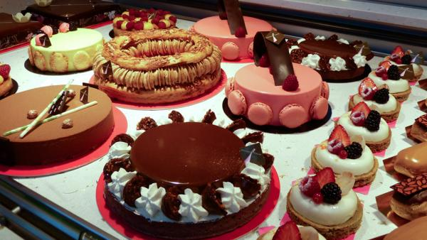

Nuestra pastelería se inauguró el 17 de julio de 2019, su fundadora es Norka Guadalupe Condori Bustincio, quien optó poner el negocio junto a sus hermanos Victor y Yandhira, para ella, a sus 16 años, cree que mezclar huevos, azúcar, mantequilla y harina significa mucho más que “hacer un pastel”.
Para ella su trabajo es una fuente constante de placer, orgullo y creatividad. Crear pasteles increíbles conecta a Norka con todo su entorno y su familia.
Actualmente se encuentra con su negocio esperando que todos disfruten de lo que ella hace, porque su mayor motivación es hacer felices a los demás.
Cuando era niña, a Norka le resultaba difícil imaginar una carrera exitosa como uno de los mejores panaderos y decoradores de pasteles de Perú. No se consideraba a sí misma como una artista natural y, a menudo, luchaba en la clase de arte durante sus años escolares. Sin embargo, después de comenzar su carrera en Norka's Bakery lavando ollas y sartenes, Norka pronto se dio cuenta de que había heredado el gen de la familia para hornear. Fue en la panadería donde Norka encontró su vocación y supo que su destino era ayudar a su padre a hacer del negocio familiar un nombre familiar. No se dio cuenta de cuán pronto sería llamado a la acción. Cuando tenía 17 años, su padre falleció, cambiando para siempre la vida de Norka. Aprovechando la fuerza de su memoria y reforzado por usar el medallón de San Antonio de su padre (que todavía usa todos los días),